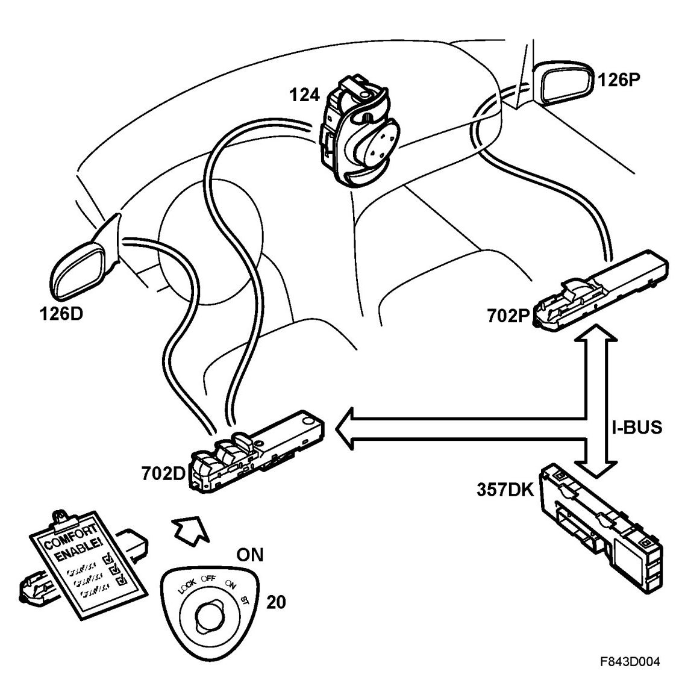

Door Mirrors, Brief Description
Door Mirrors, Brief Description
Overview

- Driver's door module, DDM (702D)
- Passenger door module, PDM (702P)
- 4D: Rear left door module, RLDM (702RL)
CV: Rear left door module, RLDM (575RL)
- 4D: Rear right door module, RRDM (702RR)
CV: Rear right door module, RRDM (575RR)
- Motor, electrically adjustable door mirror (126D, 126P)
- Switch, electrically adjustable door mirror (124)
- Control module, electrically adjustable seat with memory, driver, DSM (357Dk)
- Control module, BCM (707)
- CIM (703)
- Underhood electrical centre, UEC (342)
- Control module, TCM (502)
- ECM
Description
The door mirrors can be adjusted electrically. Variants are available with a memory function and a retraction function. All variants have heating. The mirror heating function is found in RRDM. DDM controls and feeds the driver door mirror and also controls the passenger door mirror via PDM during manual setting. The keypad for manual operation is located in the driver's door. When making memory settings, DDM and PDM act on bus messages from the control module in the driver's seat (DSM).